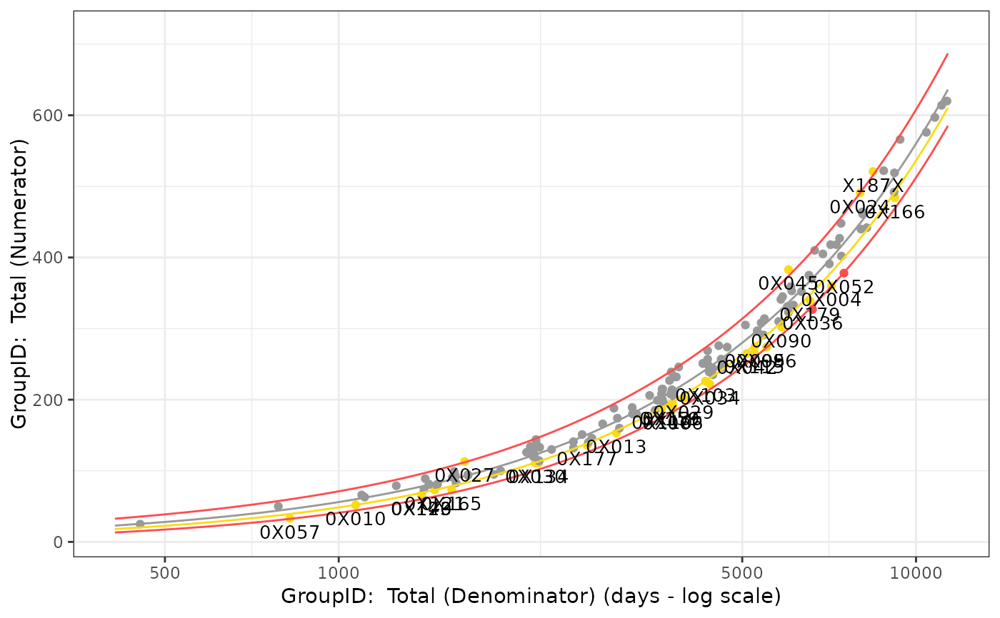

R/Visualize_Scatter.R
Visualize_Scatter.RdGroup-level visualization of group-level results using a Poisson or Wilcoxon model.
Visualize_Scatter(
dfFlagged,
dfBounds = NULL,
strGroupCol = NULL,
strGroupLabel = NULL,
strUnit = "days",
vColors = c("#999999", "#FADB14", "#FF4D4F")
)data.frame analyze_poisson results with flags added.
data.frame data.frame giving prediction bounds for range of dfFlagged.
character name of stratification column for facet wrap Default: NULL
character name of group, used for labeling axes. Default: NULL
character exposure time unit. Default: days
character vector of hex colors for plotting boundaries/thresholds. Index 1: mean; index 2: first threshold boundary; index 3: second threshold boundary.
group-level plot object.
dfInput <- AE_Map_Adam()
SafetyAE <- AE_Assess(dfInput)
dfBounds <- Analyze_Poisson_PredictBounds(SafetyAE$lData$dfTransformed, c(-5, 5))
Visualize_Scatter(SafetyAE$lData$dfFlagged, dfBounds)

# TODO: add stratified example